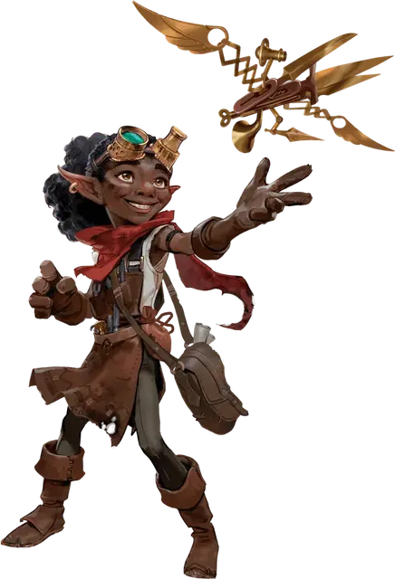

Гном-Изобретатель из Небеспокойсь
Nevermind Gnome Inventor
Маленький Гуманоид, любое мировоззрение

Класс Доспеха 14 (кожанная броня)
Хиты 36 (8к6 + 8)
Скорость 30 футов
| мод | спас | ||
|---|---|---|---|
| СИЛ | 8 | −1 | −1 |
| ЛОВ | 17 | +3 | +5 |
| ТЕЛ | 13 | +1 | +1 |
| мод | спас | ||
|---|---|---|---|
| ИНТ | 18 | +4 | +6 |
| МДР | 11 | +0 | +0 |
| ХАР | 14 | +2 | +2 |
Навыки Восприятие +2, Магия +6, Расследование +6
Чувства тёмное зрение 60 футов, пассивное Восприятие 12
Языки Общий, Гномий
Опасность 2 (450 опыта)
Бонус мастерства +2
Особенности
Всегда думая наперед. Изобретатель совершает броски инициативы с преимуществом.
Действия
Мультиатака. Изобретатель совершает две атаки Летающей клыкастой ловушкой. Он может заменить одну из этих атак гаджетом «Громовой крик», если он доступен.
Летающая клыкастая ловушка. рукопашная или дальнобойная атака оружием: +5 к попаданию, досягаемость 5 футов или дальность 60 футов, одна цель. Попадание: 8 (1к10 + 3) колющего урона, и существо должно преуспеть в спасброске Ловкости Сл 14, иначе его скорость уменьшится до 0 до начала следующего хода изобретателя.
Гаджет «Громовой крик» (перезарядка 5–6). Изобретатель производит устройство, которое излучает визжащую звуковую волну в 30-футовом конусе, исходящем от изобретателя. Каждое существо в этой области должно пройти спасбросок Телосложения Сл 14, получив 10 (3к6) урона звуком при провале или половину этого урона при успехе.
Реакции
Световой порошок. Если изобретатель получает урон от существа, которое он может видеть в пределах 15 футов от себя, изобретатель принимает ответные меры, бросая в существо блестящий взрывной порошок. Существо должно преуспеть в спасброске Ловкости Сл 14, иначе будет ослеплено до конца своего следующего хода.
Описание
Гора Небеспокойсь — полый, спящий вулкан на острове Санкрист в Кринне. Внутри горы живет активное сообщество скальных гномов - жестянщиков и других изобретателей, неустанно изучающих различные научные дисциплины, чтобы создавать механические чудеса.
Изобретатели горы Небеспокойсь, полные новаторских идей и безрассудного энтузиазма, рады любой возможности продемонстрировать свои творения. Эти талантливые изобретатели используют свой ум и технологические идеи, чтобы перехитрить врагов.
Кто из нас не восхищался величественной птицей, парящей высоко вверху, и не думал: "Я могу лучше"?.
Сначала, благодаря работе уважаемого элавациониста Рирординиса Трампа, мы создали лифты, чтобы подняться на высоту горы Небеспокойсь. Затем, с помощью гномфлингера, мы взмыли в небеса так же изящно, как скачущие камни. Теперь позвольте мне представить следующую ступень в автоматизированном восхождении: облакозахватчик!
Где он находится, спросите вы? Вы сидите в нем! И всего за три... два... один...
— Последние слова изобретательницы Мики Маллоусвейн перед ее исчезновением